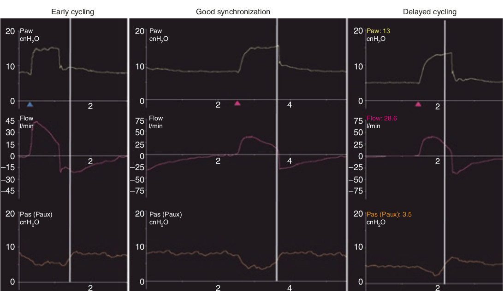

نقطه میانی استراحت عضلات دمی، جائی است که می بایست هواگیری مکانیکال ریه ها متوقف شود (سایکل). اگر زودتر باشد، سایکل زودرس و اگر دیرتر باشد سایکل دیررس می باشد. در هر دو حالت منحنی شدت جریان و فشار دچار تغییراتی میشود که در در بحث حمایت فشاری قسمت ترایگر نارس و ترایگر دیررس آمد.

در مورد سایکل کدام مورد زیر غلط است؟
۱ - سایکل لحظه اتمام هواگیری مکانیکال ریه است
۲ - سایکل تاثیر بسزائی بر روی هماهنگی بیمار و ونتیلاتور دارد
۳ - سایکل باید در پایان تلاش دمی بیمار روی دهد
۴ - سایکل باید در میانه راه استراحت عضلات دمی روی دهد
۵ - اگر سایکل پس از خاتمه استراحت عضلات روی دهد دیررس محسوب میشود